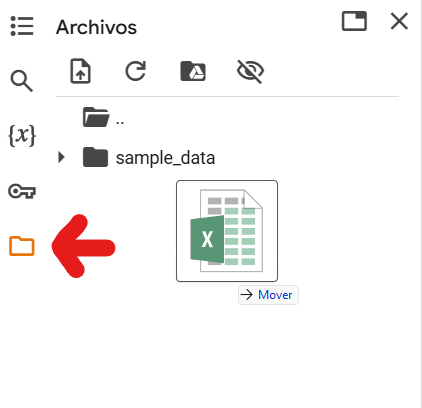
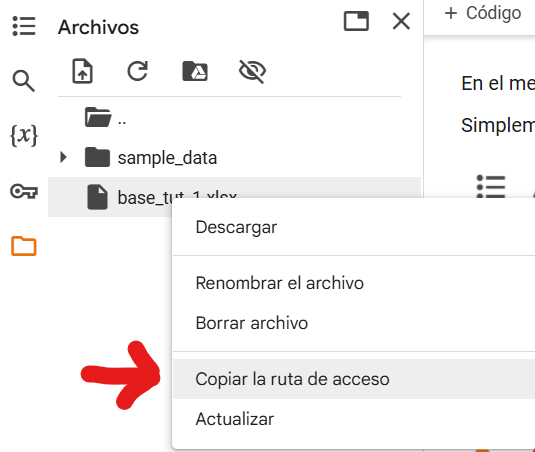

Tema 14: Manejo de datos tabulados#
Nos referimos a datos tabulados a aquellos que están ordenados en filas y colummas, de la siguiente manera:
índice |
Nombre |
Edad |
|---|---|---|
0 |
Carlos |
38 |
1 |
Fernando |
29 |
… |
… |
… |
n |
Elizabeth |
43 |
Esta forma de organizar los datos permite trabajar con ellos en forma muy sencilla y es el estándar para el análisis estadístico.
Estos datos pueden guardarse de muchas formas, algunos ejemplos que son los más utilizados con los siguientes:
formato |
uso |
|---|---|
SQL |
Las bases de datos SQL son bases relacionales, donde existen múltiples bases tabulares interrelacionadas con llaves. Se usan en datos complejos y es el estándar en muchos sistemas informáticos. Para consultarlos se usa el lenguaje |
CSV |
Un archivo |
xlsx |
Este es el formato propietario de MS Excel, y puede guardar múltiples hojas, cada una de las cuales puede tener una o más tablas ordenadas. |
En esta libreta aprenderemos cómo trabar en python con datos tabulados y veremos brevemente cómo importar los datos desde csv o xlsx.
Pandas y Polars#
En python existe un módulo de la distribución estándar llamado csv que permite trabajar con datos tabulados en ese formato, pero es limitado para el análisis estadístico, por lo que en general, utilizaremos librerías especializadas para el análisis de datos.
En python, existen dos de estas librerías que son el estándar de la industria:
Comparación entre Pandas y Polars#
Característica |
Pandas |
Polars |
|---|---|---|
Lenguaje base |
Python (con partes en Cython) |
Rust (con interfaz Python) |
Modelo de ejecución |
Eager (se ejecuta línea por línea) |
Lazy o eager (permite optimización automática si se usa el modo lazy) |
Velocidad |
Muy bueno, aunque puede volverse lento con grandes volúmenes de datos |
Extremadamente rápido, especialmente con datos grandes o en modo lazy |
Consumo de memoria |
Alto en comparación |
Más eficiente en memoria |
Sintaxis |
Muy estable, ampliamente documentada y conocida |
Inspirada en pandas, pero con diferencias en el uso de expresiones y pipes (` |
Soporte de datos |
Muy amplio: CSV, Excel, SQL, JSON, Parquet, etc. |
Amplio, pero más enfocado a formatos modernos (CSV, Parquet, Arrow) |
Paralelización |
No por defecto (usa un solo núcleo) |
Sí, corre operaciones en paralelo por defecto |
Manejo de fechas y tiempos |
Maduro y muy completo |
Limitado pero en constante mejora |
Popularidad |
Altísima, es el estándar en ciencia de datos |
Creciendo rápidamente, adoptado por usuarios que requieren alto rendimiento |
Casos de uso ideales |
Análisis exploratorio, notebooks, tareas pequeñas a medianas |
Procesamiento eficiente de grandes volúmenes de datos, pipelines optimizados |
Truco
La regla básica es, para datos muy grandes, cuando el equipo no permita tener toda la información en la memoria, por ejemplo, datasets mayores a 4Gb, se sugiere directamente utilizar polars. Para los demás casos pandas es adecuado, aunque también puede utilizarse polars.
Este curso se basa en el uso de pandas.
pandas es entonces una librería de python para el manejo de datos tabulados. Veamos un ejemplo de su uso, para ello, tomaremos los datos simulados del tema 13.
Demostración de pandas#
pacientes = {
'ids': [ 1, 2, 3, 4, 5, 6, 7, 8, 9, 10, 11, 12, 13, 14, 15, 16, 17,
18, 19, 20, 21, 22, 23, 24, 25, 26, 27, 28, 29, 30],
'peso': [69.6, 62.7, 74.2, 66.7, 62.6, 67.4, 69.2, 71.2, 66.8, 69.7, 68.9,
69.5, 72.5, 77.7, 64.6, 76.4, 64.1, 68.3, 68.4, 65.3, 69.4, 61.6,
75.4, 63.6, 82.1, 73.3, 70.8, 69.5, 83.9, 73.9],
'talla': [1.78, 1.62, 1.68, 1.62, 1.73, 1.65, 1.53, 1.61, 1.62, 1.61, 1.73,
1.51, 1.7 , 1.68, 1.7 , 1.65, 1.64, 1.59, 1.68, 1.71, 1.64, 1.67,
1.67, 1.67, 1.72, 1.61, 1.69, 1.57, 1.67, 1.68]
}
print(pacientes)
{'ids': [1, 2, 3, 4, 5, 6, 7, 8, 9, 10, 11, 12, 13, 14, 15, 16, 17, 18, 19, 20, 21, 22, 23, 24, 25, 26, 27, 28, 29, 30], 'peso': [69.6, 62.7, 74.2, 66.7, 62.6, 67.4, 69.2, 71.2, 66.8, 69.7, 68.9, 69.5, 72.5, 77.7, 64.6, 76.4, 64.1, 68.3, 68.4, 65.3, 69.4, 61.6, 75.4, 63.6, 82.1, 73.3, 70.8, 69.5, 83.9, 73.9], 'talla': [1.78, 1.62, 1.68, 1.62, 1.73, 1.65, 1.53, 1.61, 1.62, 1.61, 1.73, 1.51, 1.7, 1.68, 1.7, 1.65, 1.64, 1.59, 1.68, 1.71, 1.64, 1.67, 1.67, 1.67, 1.72, 1.61, 1.69, 1.57, 1.67, 1.68]}
El arreglo de datos pacientes es un diccionario donde cada llave corresponde a una columna y cada ítem de las listas correspondientes son los datos correspondientes a un paciente.
Esto sin embargo, cognitivamente, es difícil de procesar, aquí entra en juego pandas observa como transforma los datos a una tabla útil.
import pandas as pd
df = pd.DataFrame(pacientes)
df
| ids | peso | talla | |
|---|---|---|---|
| 0 | 1 | 69.6 | 1.78 |
| 1 | 2 | 62.7 | 1.62 |
| 2 | 3 | 74.2 | 1.68 |
| 3 | 4 | 66.7 | 1.62 |
| 4 | 5 | 62.6 | 1.73 |
| 5 | 6 | 67.4 | 1.65 |
| 6 | 7 | 69.2 | 1.53 |
| 7 | 8 | 71.2 | 1.61 |
| 8 | 9 | 66.8 | 1.62 |
| 9 | 10 | 69.7 | 1.61 |
| 10 | 11 | 68.9 | 1.73 |
| 11 | 12 | 69.5 | 1.51 |
| 12 | 13 | 72.5 | 1.70 |
| 13 | 14 | 77.7 | 1.68 |
| 14 | 15 | 64.6 | 1.70 |
| 15 | 16 | 76.4 | 1.65 |
| 16 | 17 | 64.1 | 1.64 |
| 17 | 18 | 68.3 | 1.59 |
| 18 | 19 | 68.4 | 1.68 |
| 19 | 20 | 65.3 | 1.71 |
| 20 | 21 | 69.4 | 1.64 |
| 21 | 22 | 61.6 | 1.67 |
| 22 | 23 | 75.4 | 1.67 |
| 23 | 24 | 63.6 | 1.67 |
| 24 | 25 | 82.1 | 1.72 |
| 25 | 26 | 73.3 | 1.61 |
| 26 | 27 | 70.8 | 1.69 |
| 27 | 28 | 69.5 | 1.57 |
| 28 | 29 | 83.9 | 1.67 |
| 29 | 30 | 73.9 | 1.68 |
Observa que lo primero que hay que hacer es importar pandas y como convención siempre que importa con la abreviatura pd.
Nombramos a la variable «df» como «data frame» o arreglo de datos. La abreviatura df también es estándar en esta librería y en polars cuando el modo es «eager».
También observa que ahora no estamos utilizando print(df), la razón es la sigueinte:
Importante
La última expresión en una celda de código en una libreta se muestra en la consola como si se usara print pero con formato adicional.
observa la diferencia en el formato al utilizar print(df) en la siguiente celda.
print(df)
ids peso talla
0 1 69.6 1.78
1 2 62.7 1.62
2 3 74.2 1.68
3 4 66.7 1.62
4 5 62.6 1.73
5 6 67.4 1.65
6 7 69.2 1.53
7 8 71.2 1.61
8 9 66.8 1.62
9 10 69.7 1.61
10 11 68.9 1.73
11 12 69.5 1.51
12 13 72.5 1.70
13 14 77.7 1.68
14 15 64.6 1.70
15 16 76.4 1.65
16 17 64.1 1.64
17 18 68.3 1.59
18 19 68.4 1.68
19 20 65.3 1.71
20 21 69.4 1.64
21 22 61.6 1.67
22 23 75.4 1.67
23 24 63.6 1.67
24 25 82.1 1.72
25 26 73.3 1.61
26 27 70.8 1.69
27 28 69.5 1.57
28 29 83.9 1.67
29 30 73.9 1.68
Ahora que tenemos el arreglo de datos (df) podemos hacer muchas cosas diréctamente con la variable. Por ejemplo, obtener descriptivos:
df.describe()
| ids | peso | talla | |
|---|---|---|---|
| count | 30.000000 | 30.000000 | 30.000000 |
| mean | 15.500000 | 69.976667 | 1.654333 |
| std | 8.803408 | 5.455189 | 0.059055 |
| min | 1.000000 | 61.600000 | 1.510000 |
| 25% | 8.250000 | 66.725000 | 1.620000 |
| 50% | 15.500000 | 69.450000 | 1.670000 |
| 75% | 22.750000 | 73.100000 | 1.687500 |
| max | 30.000000 | 83.900000 | 1.780000 |
Observa como con un solo método describe() podemos obtener mucha información valiosa sin tener que utilizar otro tipo de funciones para la media, la desviación estándar, la mediana, el primer y tercer cuartil, y el rango.
Obtener a los valores de cada columna también es muy sencillo, la sintaxis es la misma que en un diccionario:
peso = df['peso']
peso
0 69.6
1 62.7
2 74.2
3 66.7
4 62.6
5 67.4
6 69.2
7 71.2
8 66.8
9 69.7
10 68.9
11 69.5
12 72.5
13 77.7
14 64.6
15 76.4
16 64.1
17 68.3
18 68.4
19 65.3
20 69.4
21 61.6
22 75.4
23 63.6
24 82.1
25 73.3
26 70.8
27 69.5
28 83.9
29 73.9
Name: peso, dtype: float64
También es muy sencillo agregar columnas calculadas, lo único que necesitamos hacer es escribir la operación que queremos realizar con los operadores correspondientes y las columnas en cuestión.
Si hacemos df['peso'] * 2 lo que pandas va a hacer es multiplicar cada celda en la columna de peso por 2.
Esto se debe a que las operaciones en pandas funcionan con base en matrices matemáticas:
De esta forma, si queremos obtener el imc para cada paciente, matemáticamente lo expresaríamos así:
Finalmente en polars es tan fácil como lo puedes ver en la siguiente celda.
\(\text{Columna de IMC} = \frac{Columna peso}{(Columna de talla)^2}\)
df['imc'] = df['peso'] / df['talla'] **2
df.head() # muestra solo las primeras 5 filas
| ids | peso | talla | imc | |
|---|---|---|---|---|
| 0 | 1 | 69.6 | 1.78 | 21.966923 |
| 1 | 2 | 62.7 | 1.62 | 23.891175 |
| 2 | 3 | 74.2 | 1.68 | 26.289683 |
| 3 | 4 | 66.7 | 1.62 | 25.415333 |
| 4 | 5 | 62.6 | 1.73 | 20.916168 |
Importación de datos a pandas#
Pandas también ofrece la capacidad de importar datos diréctamente desde csv y de xlsx aunque para ello se requiere la librería openpyxl.
Nota
Pandas puede importar muchos otros tipos de datos, incluso desde .sav de SPPS, pero requiere librerías adicionales
Importante
Para poder importar datos, se requiere forzosamente contar la ruta de acceso al archivo, que puede ser al ruta local al archivo o incluso la dirección web, ya que es posible importar datos desde internet.
Por tanto, es importante tambien que python y pandas puedan acceder al archivo en cuestión.
La forma más sencilla de trabajar, es poniendo el archivo en el mismo lugar que la libreta en jupyter lab e importarla solo con su nombre de archivo. Supón el siguiente escenario:
Organización de la carpeta Si seguiste los pasos del tema 1, tu carpeta debe verse algo así:
/Documentos/cursos/curso_python:
pyproyect.toml
README.md
uv.lock
main.py
libreta.ipynb # supongamos que esta es tu libreta
base.csv # supongamos que esta es una base
base_2.xlsx # supongamos que esta es otra base
Importar los datos en tu libreta se vería algo así:
import pandas as pd
df_1 = pd.read_csv('base.csv')
df_2 = pd.read_excel('base_2.xlsx', sheet_name='Hoja 1')
df_1 # en la celda va a mostrar el contenido del dataframe 1.
Observa que en excel se puede especificar el nombre de la hoja de trabajo que querramos.
Ejercicio#
Intenta importar algunos datos que ya tengas en la siguiente celda:
'Importa y despliega tus datos aquí'
'Importa y despliega tus datos aquí'
Datos ordenados (Tidy Data)#
En el análisis de datos es fundamental que los datos estén bien organizados. Una forma especialmente útil de organizarlos se llama “formato ordenado”, o en inglés, “tidy data”.
¿Por qué importa el orden?#
Imagina que quieres calcular el promedio de peso de varios pacientes, o hacer una gráfica para ver cómo cambian con el tiempo. Si los datos están organizados de manera inconsistente o caótica, tendrás que hacer muchos pasos extra antes de poder analizarlos. Un buen orden te ahorra trabajo, reduce errores y hace que el análisis sea más claro.
Reglas del formato ordenado (tidy)#
El formato ordenado sigue tres reglas muy simples:
Cada variable es una columna
Por ejemplo: «edad», «sexo» y «peso» son tres variables diferentes, así que cada una debe tener su propia columna.Cada observación es una fila
Por ejemplo: una persona, un experimento o un paciente debe estar contenido en una sola fila.Cada tabla contiene un solo tipo de cosa
Por ejemplo: si tienes datos de pacientes y de hospitales, cada tipo debe ir en una tabla distinta (una tabla de pacientes, otra de hospitales).
¿Cómo se ven los datos ordenados?#
Un ejemplo de datos ordenados sería:
nombre |
año |
peso |
|---|---|---|
Ana |
2022 |
55.0 |
Ana |
2023 |
56.2 |
Luis |
2022 |
72.5 |
Luis |
2023 |
73.0 |
En esta tabla:
Cada variable es una columna:
nombre,año,peso.Cada observación (medición de peso en cierto año) es una fila.
Todos los datos son del mismo tipo: mediciones de peso por persona por año.
¿Y cómo se ven los datos desordenados?#
A veces, por comodidad o por cómo se recogen los datos, encontramos tablas como esta:
nombre |
peso_2022 |
peso_2023 |
|---|---|---|
Ana |
55.0 |
56.2 |
Luis |
72.5 |
73.0 |
En esta tabla:
Las columnas
peso_2022ypeso_2023mezclan dos variables: el año y el peso.No hay una columna específica para el año.
Esto hace más difícil filtrar, agrupar, calcular promedios por año o hacer gráficas.
¿Qué se hace para “ordenar” los datos?#
En programación, usamos herramientas que nos permiten transformar los datos al formato ordenado. Por ejemplo:
En R se usan funciones como
pivot_longer()oseparate().En Python, usamos
pandasy funciones comomelt().
Estas funciones no cambian el contenido de los datos, solo la forma en que están organizados.
Ejercicio personal#
A partir de esta tabla:
nombre |
2022 |
2023 |
|---|---|---|
Ana |
55.0 |
56.2 |
Luis |
72.5 |
73.0 |
Las columnas con año son del peso de cada individuo
Transforma los datos al siguiente formato:
nombre |
año |
peso |
|---|---|---|
Ana |
2022 |
55.0 |
Ana |
2023 |
56.2 |
Luis |
2022 |
72.5 |
Luis |
2023 |
73.0 |
Truco
Si ya estás usando Python y pandas, puedes buscar cómo usar la función pd.melt() para lograrlo.
Referencia académica#
El concepto de “tidy data” fue propuesto por Hadley Wickham, uno de los autores principales del ecosistema tidyverse en R. Aquí tienes la referencia original:
Wickham, H. (2014). Tidy Data. Journal of Statistical Software, 59(10), 1–23. https://doi.org/10.18637/jss.v059.i10
#| nombre | peso_2022 | peso_2023 |
#|--------|-----------|-----------|
#| Ana | 55.0 | 56.2 |
#| Luis | 72.5 | 73.0 |
'Pon aquí tu código'
# En la siguiente celda está la respuesta.
'Pon aquí tu código'
df_wide = pd.DataFrame({ # los datos, con la misma estructura.
'nombre': ['Ana', 'Luis'],
'2022': [55.0, 72.5],
'2023': [56.2, 73.0]
})
df_long = df_ejercicio.melt(
id_vars=['nombre'], # este dato se va a repetir en cada celda.
value_vars=['2022','2023'], # esto es el nombre de las columnas que queremos derretir "melt".
value_name='Peso', # Es el nombre de la columna del dato
var_name='Año', # es el nombre de la columna de la variable
)
df_long
Importancia de los datos ordenados#
Importante
Si los datos no están ordenados, si tienen diferentes tipos de datos, complicará mucho nuestro análisis.
Concepto Crítico
Hasta el 80% del tiempo dedicado al análisis de datos se otorga a la preparación de los mismo, no al análisis como tal. Mientras más ordenados y limpios estén los datos, tendrás más éxito.
Cómo trabajar en Colab#
Primer paso: hacer que el excel esté disponible en colab.#
En el menú vertical del lado izquierdo hay un ícono de «folder» al seleccionarlo se abrirán los archivos disponibles en nuestro código.
Simplemente hay que arrastrar el excel a ese menú.

Segundo paso: copiar ruta de acceso#
Una vez que la base esté disponible, hay que dar click derecho y copiar la ruta de acceso:

Tercer paso: cargar los datos#
Para cargar los datos, hacemos una variable ruta que contenga la ruta de acceso que copiamos y usamos pandas para leer los datos
ruta = '/content/base_tut_1.xlsx' # Pega aquí la ruta de acceso
# asumiendo que así se llama nuestra base de datos
df = pd.read_excel(ruta)
df.head()
id edad sexo peso talla TAS TAD HAS DM2
0 1 28.0 F 113.5 1.54 142.0 79.0 NO SI
1 2 46.0 M 122.5 1.76 117.0 74.0 SI NO
2 3 54.0 F 120.0 1.50 140.0 70.0 SI SI
3 4 38.0 F 102.0 1.60 110.0 70.0 NO NO
4 5 40.0 F 118.0 1.78 114.0 80.0 NO SI